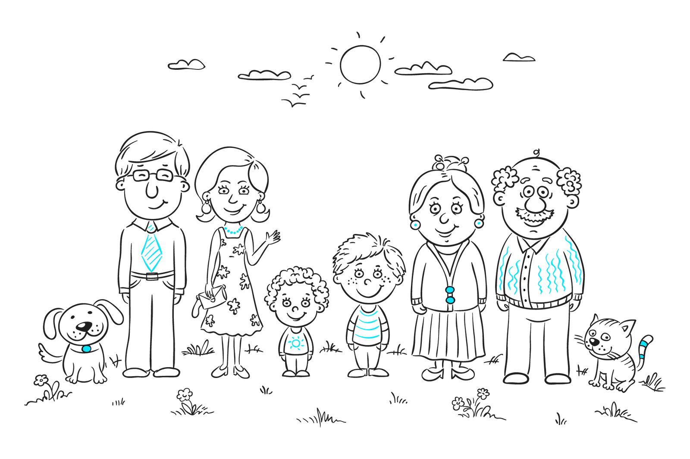
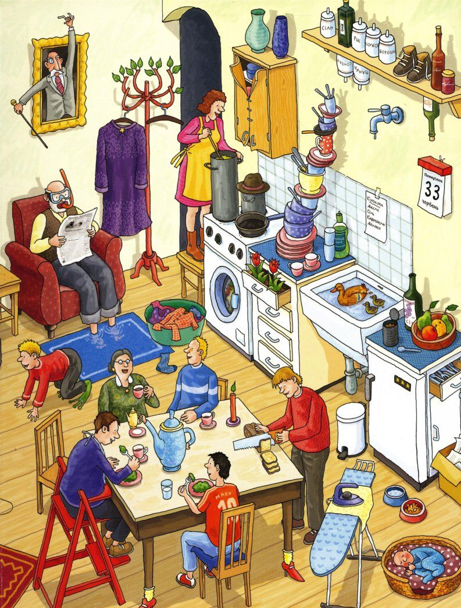
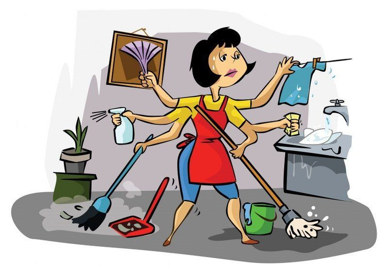

Family.
Let's talk...
What do you think plays the most important role in our life?
Who do you spend most of your time with?
Who helps you solve problems and supports you in difficult moments?
Who teaches you to do good deeds and be kind?
Who teaches you to draw the right conclusions from your mistakes?
Who can you see in the picture?
What kind of relationships do these people have?

Is family important?
- How do you maintain good relationships with your family members?
- What do you enjoy doing most with your family?
- How do you resolve conflicts within your family?
- How important is communication in maintaining family relationships?
- What role do family traditions play in your family?
Are we simmilar or different?

The United States
List of articles:
The condition of the American familyAmerican Family Life
State of the American Family
About Family Life in America

the United Kingdom
List of articles:
FamilyThe Structure of Families in the UK
Our stories: exploring UK family lives
Families in the UK

Russia
List of articles:
FamilyModern Russian Family
The Russian Family
Features of modern Russian family
Further exploring
How are globalization and technology impacting family dynamics and relationships in different cultures?
Plan:
Impact on Family Dynamics
Changes in Communication:1. Discuss how technology (e.g., smartphones, social media) has altered family communication patterns.
2. Positive impacts: staying connected, ease of communication.
3. Negative impacts: reduced face-to-face interactions, potential for misunderstandings.
Role of Globalization:
1. Explain how globalization affects family roles and structures (e.g., migration, work opportunities abroad).
2. Positive impacts: exposure to different cultures, economic opportunities.
3. Negative impacts: separation from extended family, cultural dilution.
Cultural Comparisons
Western Cultures:1. Discuss the impact of individualism promoted by technology and globalization.
2. Changes in family structure: increase in nuclear families, later marriages, and fewer children.
Eastern Cultures:
1. Discuss the tension between traditional values and modern influences.
2. Changes in family structure: maintaining extended family living arrangements, pressure to adapt to modern lifestyles.
Discussion and Critical Thinking
Guided Discussion Questions:How has technology impacted family relationships in positive and negative ways?
In what ways has globalization influenced traditional family roles and structures?
Can the effects of globalization and technology on family dynamics be considered universally similar, or do they vary significantly by culture?
Future Implications:
Brainstorm and discuss the potential future impacts of continued technological advancements and globalization on family dynamics.
Exploring the Role of Family in Human Life
What's wrong?
Read! Watch! Think!
Family Systems Theory
Read the Article
- What does the word ‘family’ mean to you?
- How many types of family structures do you know?
- What is your family structure like?
- How have family structures changed over time?
- Do you think the concept of family will change in the future?
- How do you maintain good relationships with your family members?
- What do you enjoy doing most with your family?
- How do you resolve conflicts within your family?
- How important is communication in maintaining family relationships?
- What role do family traditions play in your family?
Family Roles and Responsibilities
- What roles do different family members play in your family?
- How have family roles changed in recent times?
- Do you think household responsibilities should be shared?
- How important are grandparents in a family?
- Should children have responsibilities in the family?
Let's think...
Brainstorm ways in which household responsibilities can be shared more equally among family members. 
What about traditions?
American Family Traditions
Family traditions play a significant role in American culture, providing a sense of continuity, identity, and connection between generations. These traditions can range from simple rituals like Sunday dinners or annual vacations to more elaborate celebrations like holiday gatherings or milestone events. One common tradition in American families is the celebration of Thanksgiving, where loved ones come together to share a meal and express gratitude for their blessings. Families often have their own unique customs for this holiday, such as watching the Macy's Thanksgiving Day Parade, playing touch football in the yard, or going around the table and sharing what they are thankful for. Another popular tradition is decorating the Christmas tree together as a family. This festive activity often involves unpacking treasured ornaments and reminiscing about the memories attached to each one. Families may also have traditions like baking cookies for Santa, attending a Christmas Eve church service, or exchanging handmade gifts on Christmas morning. Some families have traditions that center around birthdays, such as making a special breakfast in bed for the birthday person or hosting a themed party with friends and family. Others may have traditions related to cultural or religious events, like lighting the menorah for Hanukkah or fasting during Ramadan. Overall, these traditions serve as a way for families to create lasting memories, strengthen bonds, and pass down values and beliefs from one generation to the next. They provide a sense of stability and comfort in an ever-changing world, reminding us of the importance of family and the power of shared experiences.
British family traditions
British families have a rich history of traditions that have been passed down from generation to generation. One of the most iconic British traditions is the Sunday roast, where families gather together on Sundays to enjoy a hearty meal of roasted meat, potatoes, vegetables, and gravy. Another popular British tradition is the afternoon tea, a time-honored custom that involves enjoying tea, sandwiches, scones, and pastries in the mid-afternoon. This tradition dates back to the 19th century and is still a beloved pastime for many British families. Many British families also have a tradition of celebrating Christmas with festive decorations, a big Christmas dinner, and the exchange of gifts. This holiday is a time for families to come together and create lasting memories. In addition to these well-known traditions, British families also have their own unique customs and rituals that vary from region to region. From celebrating holidays like Bonfire Night with fireworks and bonfires to participating in traditional dancing at events like ceilidhs, British families have a wide range of traditions that help to bring them together and strengthen their bonds. Overall, traditions play a significant role in British family life, providing a sense of continuity, connection, and identity. These customs and rituals help to create a sense of community and belonging within families, passing on values and memories that are cherished for years to come.
Russian family traditions
In Russian families, traditions play a significant role in shaping the lives of its members. From generation to generation, these customs are passed down, creating a sense of unity and belonging within the family unit. One of the most important traditions in Russian families is the celebration of holidays such as New Year's, Christmas, and Easter. These holidays are often marked with elaborate feasts, gatherings of extended family members, and the exchange of gifts. These celebrations are a time for family members to come together and strengthen their bonds with one another. Another important tradition in Russian families is the observance of religious rituals. The majority of Russians belong to the Russian Orthodox Church, and many families attend church services regularly and participate in religious ceremonies such as baptisms, weddings, and funerals. These rituals help to instill a sense of spirituality and moral values within the family. Family gatherings are also a common tradition in Russian households. Whether it's a birthday, anniversary, or simply a Sunday dinner, families often gather together to share a meal and catch up on each other's lives. These gatherings provide an opportunity for family members to maintain close relationships and keep in touch with one another. Overall, traditions are a central part of Russian family life, helping to create a sense of continuity and stability within the family unit. They serve as a reminder of the importance of family and the bonds that tie them together, making them an integral part of Russian culture and heritage.